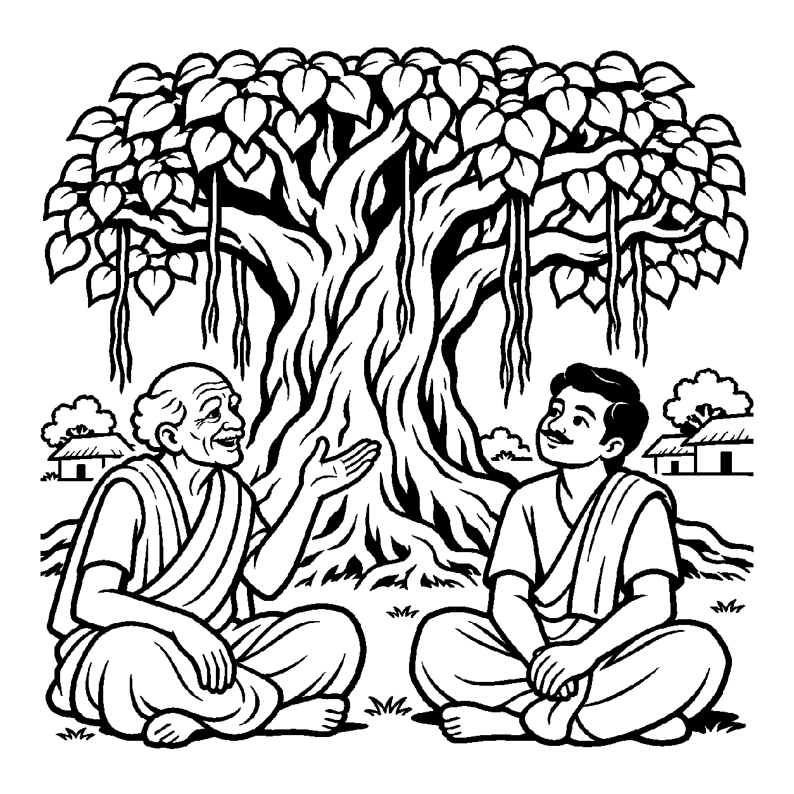

રાત્રિના અંધકારમાં આકાશ તરફ જોતાં કરોડો તારાઓથી ભરેલી આકાશગંગા એક અવિચળ શ્વેત નદી જેવી ચમકતી દેખાય છે. વૈજ્ઞાનિક દ્રષ્ટિએ પ્રત્યેક તારામાં પ્રતિ ક્ષણે કરોડો પરમાણુઓ બળે છે, વિસ્ફોટ થાય છે અને નવો પ્રકાશ ફેંકાય છે; અણુઓનો ઉત્પાદ અને વ્યય ક્ષણે ક્ષણે ચાલે છે. છતાં સદીઓ અને યુગો વીતી જવા છતાં તે તારામંડળની સમગ્ર રચના આકાશમાં તેવી ને તેવી જ અવિચળ જળવાઈ રહે છે. પૂર્વજો જે તારાઓ જોતા હતા તે જ તારાઓ આજે પણ ચમકે છે. તેવી જ રીતે જૈન ભૂગોળ અનુસાર વિશ્વના મધ્યમાં રહેલો સુદર્શન મેરુ પર્વત, અકૃત્રિમ જિનમંદિરો અને લોકાકાશની રચનાઓ અનાદિકાળથી શાશ્વત છે. મેરુ પર્વતના પુદ્ગલોમાં પ્રતિસમય પરમાણુઓનું આવવું અને જવું (બનવું અને બગડવું) થવા છતાં પણ સમગ્ર પર્વતરૂપી પર્યાય અનાદિથી નિત્ય એવી ને એવી જ બની રહે છે. આ અવિચળ પર્યાયગત પ્રવાહને મુખ્યતાથી ગ્રહણ કરતો જે નય છે, તેને 'અનાદિનિત્ય પર્યાયાર્થિકનય' કહેવાય છે.
સામાન્ય બુદ્ધિ પર્યાયને કેવળ ક્ષણિક અને નાશવંત માને છે. પરંતુ આ નય દર્શાવે છે કે જગતમાં કેટલીક અકૃત્રિમ વ્યવસ્થાઓ એવી છે જે ક્યારેય કોઈના દ્વારા બનાવવામાં આવી નથી અને ક્યારેય નષ્ટ થતી નથી. જેમ કે સમુદ્રનું અસ્તિત્વ, પૃથ્વીની ધરી કે મેરુ પર્વત. સૂક્ષ્મ સ્તરે પ્રતિસમય પરિવર્તન થવા છતાં સ્થૂળ સ્તરે તેનું સાતત્ય અખંડ રહે છે. આ નય સાધકને સમજાવે છે કે પરિવર્તનના તોફાનો વચ્ચે પણ સૃષ્ટિમાં અને ચેતનામાં એક અનાદિ અવિચળ વ્યવસ્થા સદા સ્થિર રહે છે.
આ નય સાધકને પ્રેરણા આપે છે કે સંસારના બનાવો ભલે ક્ષણે ક્ષણે બદલાય, પણ ચૈતન્યનો આંતરિક ધ્રુવ પ્રવાહ અનાદિ કાળથી અવિનાશી અને અડગ જ રહ્યો છે.
પ્રતિસમય અણુઓ બદલાયે, મેરુ અડગ જણાય;
અનાદિ નિત્ય પર્યાયથી, જગ સાતત્ય મનાય.
અકૃત્રિમ રચના વિશ્વની, શાશ્વત ધર્મ સનાત;
અવિચળ આતમ ભાળતાં, પ્રગટે મુક્તિ પ્રભાત.
ક્ષણભંગુર બાહ્ય સૃષ્ટિમાં અડગ મેરુ સમાન પોતાના ત્રિકાળી ધ્રુવ આત્મસ્વભાવમાં સ્થિર થવું.

ધર્મપુરી ગામના પાદરે એક અતિ વિશાળ અને પ્રાચીન વટવૃક્ષ હતું. ગામના યુવાન સરપંચ સુમેરના મનમાં પ્રશ્ન થયો: "આ વડલાના પાંદડાં રોજ ખરે છે, ડાળીઓ કપાય છે અને નવી ફૂટે છે. જો આ વૃક્ષમાં બધું જ બદલાતું રહે છે, તો પછી ગામના લોકો શા માટે કહે છે કે 'આ વડલો અમારા વડવાઓના સમયથી અવિચળ એવો ને એવો જ ઊભો છે'? શું બદલાતી વસ્તુ ક્યારેય નિત્ય હોઈ શકે?" તે પરિવર્તન અને સાતત્યના દ્વંદ્વમાં અટવાઈ ગયો.
તે સમયે ગામના સો વર્ષના વૃદ્ધ દાદાજી ત્યાં આવ્યા. તેમણે સુમેરને વડલાના થડ પાસે બેસાડીને કહ્યું: "બેટા સુમેર! અનાદિનિત્ય પર્યાયાર્થિકનયને ઓળખ! જો તું સૂક્ષ્મ આંખે જોઈશ તો આ વડલામાં રોજ નવા પાંદડાં ફૂટે છે અને જૂના ખરી પડે છે; પરંતુ જો તું સમગ્ર વૃક્ષરૂપ પર્યાયને જોઈશ તો આ વટવૃક્ષ સદીઓથી પોતાની છાયા અને અસ્તિત્વ સાથે અડગ ઊભું છે! જેમ મેરુ પર્વતમાં પ્રતિસમય પરમાણુઓનો ઉત્પાદ-વ્યય થવા છતાં મેરુ અનાદિથી નિત્ય રહે છે, તેમ પ્રકૃતિમાં અંદર પરિવર્તન છતાં બહાર અવિચળ સાતત્ય રહે છે! અને તારી પોતાની ભીતર પણ જો; તારા વિચારો રોજ બદલાય છે, પણ તારી અંદર રહેલો આત્મા અનાદિકાળથી અવિનાશી બનીને બેઠો છે!" સુમેરની શંકા ઓગળી ગઈ. પરિવર્તનની પાછળ છુપાયેલી શાશ્વતતા સમજાતાં તેનું મન શાંત થયું અને તેનું ચિત્ત પરમ વિશ્રામમાં ઠરી ગયું.
જો જીવ કેવળ સ્થિરતાને જ જોઈને અંદર થતા સૂક્ષ્મ પરિવર્તનને નકારે, તો તે વસ્તુના ઉત્પાદ-વ્યય સ્વભાવને ભૂલીને જડતામાં સરી પડે છે. પરદ્રવ્યો કે ક્ષણિક સંયોગોને જ સર્વસ્વ માની લેવાથી મમત્વ અને પરિગ્રહનો ભાર વધે છે, જે ચિત્તને સદા આકુળ-વ્યાકુળ રાખી આધ્યાત્મિક જાગૃતિને રૂંધી નાખે છે.
આ નય પરિવર્તન અને સાતત્ય બંનેનો સમન્વય કરી સાધકને સંસારની ક્ષણિકતાથી મુક્ત કરી પરમાત્મામાં સમાવી દે છે. તે વ્યવહારિક સંયોગોની મર્યાદા દર્શાવીને પણ આંતરિક ગુણો પ્રગટાવવાની પ્રેરણા આપે છે, જેથી સાધક નિજ ચૈતન્ય સ્વરૂપમાં મહામૌનમાં અંતર્લીન થઈ જાય છે.